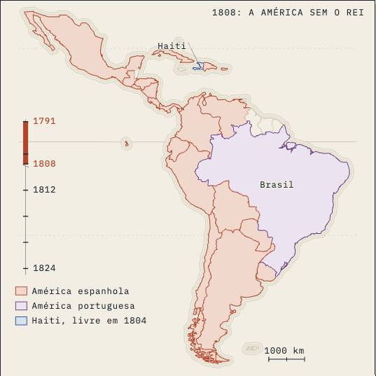

Direito Latino-americano · aula-01
Constitucionalismo latino-americano
built on2.1
on05/10
byCEO
generation2 Sequoia
commits31
its life
its figures · 3
source blocks · 2
its length · 3,744 words
its checks
negated inference 0.8 / 0.5
gap talk 0.0 / 0.1
contrast tail 0.3 / 0.5
colon reveal 12.3 / 8.0
against 4.2 beta
one sitting
drawn hero
scrolly panels
quiz
opening bet
prepared sources
lesson plan
instrument figures
reviewed plan
house layer
source blocks
meaning marks
exam bank
course blueprint